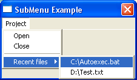

OpenSubMenu()
语法
OpenSubMenu(Text$ [, ImageID])概要
Creates an empty submenu in the current menu.
参数
Text$ The text for the submenu.
Windows:
In the Text$ argument, you can use the special '&' character to underline a specific letter: "&File" will actually display: FileImageID (optional) An optional image to display next to the submenu. This parameter only has an effect if the current menu was created using the CreateImageMenu() or CreatePopupImageMenu() command. This value can be obtained using the ImageID() function.
返回值
无.
示例
If OpenWindow(0, 200, 200, 220, 100, "SubMenu Example") If CreateMenu(0, WindowID(0)) MenuTitle("Project") MenuItem(1, "Open") MenuItem(2, "Close") MenuBar() OpenSubMenu("Recent files") ; begin submenu MenuItem( 3, "C:\Autoexec.bat") MenuItem( 4, "D:\Test.txt") CloseSubMenu() ; end submenu EndIf Repeat : Until WaitWindowEvent()=#PB_Event_CloseWindow EndIf
参阅
CloseSubMenu(), MenuTitle(), MenuItem(), MenuBar()
已支持操作系统
所有